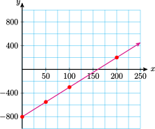
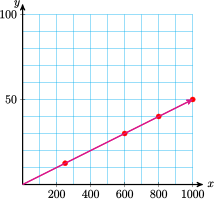

Section 1.2 Linear Models
Subsection 1. Write a linear model
When we say "Express \(y\) in terms of \(x\text{,}\)" we mean to write an equation that looks like
We say that \(x\) is the input variable, and \(y\) is the output variable.
In particular, a linear model has the form
Subsubsection Examples
Example 1.19.
Steve bought a Blu-Ray player for $269 and a number of discs at $14 each. Write an expression for Steve's total bill, \(B\) (before tax), in terms of the number of discs he bought, \(d\text{.}\)
We want an equation of the form
where Steve's bill started with the Blu-Ray player or $269, and then increased by a number of discs at a rate of $14 each. Substituting those values, we have
Example 1.20.
At 6 am the temperature was 50\(\degree\text{,}\) and it has been falling by 4\(\degree\) every hour. Write an equation for the temperature, \(T\text{,}\) after \(h\) hours.
We want an equation of the form
The temperature started at 50\(\degree\text{,}\) and then decreased each hour at the rate of 4\(\degree\) per hour, so we subtract \(4h\) from 50 to get
Example 1.21.
Kyli's electricity company charges her $6 per month plus $0.10 per kilowatt hour (kWh) of energy she uses. Write an equation for Kyli's electric bill, \(E\text{,}\) if she uses \(w\) kWh of electricity.
Kyli's bill starts a6 $6 and increases by $0.10 for each kWh, \(w\text{.}\) Thus,
Subsubsection Exercises
Notebook 1.22.
Salewa saved $5000 to go to school full time. She spends $200 per week on living expenses. Write an equation for Salewa's savings, \(S\text{,}\) after \(w\) weeks.
Notebook 1.23.
As a student at City College, Delbert pays a $50 registration fee plus $15 for each unit he takes. Write an equation that gives Delbert's tuition, \(T\text{,}\) if he takes \(u\) units.
Notebook 1.24.
Greta's math notebook has 100 pages, and she uses on average 6 pages per day for notes and homework. How many pages, \(P\text{,}\) will she have left after \(d\) days?
Notebook 1.25.
Asa has typed 220 words of his term paper, and is still typing at a rate of 20 words per minute. How many words, \(W\text{,}\) will Asa have typed after \(m\) more minutes?
Notebook 1.26.
The temperature in Nome was \(-12 \degree\) F at noon. It has been rising at a rate of \(2 \degree\) F per hour all day. Write an equation for the temperature, \(T\text{,}\) after \(h\) hours.
Notebook 1.27.
Francine borrowed money from her mother, and she owes her $750 right now. She has been paying off the debt at a rate of $50 per month. Write an equation for Francine's financial status, \(F\text{,}\) in terms of \(m\text{,}\) the number of months from now.
Subsection 2. Plot points and graph a line
The simplest way to graph a line is to make a table and plot points. We will learn more efficient methods short.ly.
Subsubsection Examples
Example 1.28.
Make a table of values, plot the points, and graph the equation \(y=-2x+6\text{.}\)
Choose both positive and negative values for \(x\text{.}\) Calculate the \(y\)-value for each \(x\)-value by substituting the \(x\)-value into the equation.
| \(x\) | \(y\) | \(\hphantom{0000}\) |
| \(-3\) | \(12\) | \(y=-2(\alert{-3})+6=12\) |
| \(-2\) | \(10\) | \(y=-2(\alert{-2})+6=10\) |
| \(-1\) | \(8\) | \(y=-2(\alert{-1})+6=8\) |
| \(0\) | \(6\) | \(y=-2(\alert{0})+6=6\) |
| \(1\) | \(4\) | \(y=-2(\alert{1})+6=4\) |
| \(2\) | \(2\) | \(y=-2(\alert{2})+6=2\) |
| \(3\) | \(0\) | \(y=-2(\alert{3})+6=0\) |
| \(4\) | \(-2\) | \(y=-2(\alert{4})+6=-2\) |
Next, sketch a Cartesian coordinate system with appropriate scales on the \(x\)- and \(y\)-axes. Plot each of the points in the table of values and connect them with a straight line. The completed graph is shown at right.
Example 1.29.
Byron borrowed $6000 from his uncle to help pay for his college education. Now that he has graduated and has a job, he is paying back the loan at $100 per month.
- Write an equation showing the amount of money, \(y\text{,}\) that Byron still owes his uncle after \(x\) months.
- Graph your equation.
- \(\displaystyle y=6000-100x\)
\(x\) \(y\) \(\hphantom{0000}\) \(0\) \(6000\) \(y=6000-100(\alert{0})=6000\) \(10\) \(5000\) \(y=6000-100(\alert{10})=5000\) \(20\) \(4000\) \(y=6000-100(\alert{20})=4000\)
Now choose appropriate scales for the axes. A good choice would be to scale the \(x\)-axis by 10's and the \(y\)-axis by 1000's.
Subsubsection Exercises
Notebook 1.30.
Graph \(~y=\dfrac{3}{4}x-3\text{.}\)
| \(x\) | \(-8\) | \(-4\) | \(0\) | \(4\) | \(6\) |
| \(y\) | \(\hphantom{0000}\) | \(\hphantom{0000}\) | \(\hphantom{0000}\) | \(\hphantom{0000}\) | \(\hphantom{0000}\) |

| \(x\) | \(-8\) | \(-4\) | \(0\) | \(4\) | \(6\) |
| \(y\) | \(-9\) | \(-6\) | \(-3\) | \(0\) | \(1.5\) |
Notebook 1.31.
Graph \(~y=-3x+2\text{.}\)
| \(x\) | \(-2\) | \(-1\) | \(0\) | \(2\) | \(4\) |
| \(y\) | \(\hphantom{0000}\) | \(\hphantom{0000}\) | \(\hphantom{0000}\) | \(\hphantom{0000}\) | \(\hphantom{0000}\) |
| \(x\) | \(-2\) | \(-1\) | \(0\) | \(2\) | \(4\) |
| \(y\) | \(8\) | \(5\) | \(2\) | \(-4\) | \(-10\) |
Notebook 1.32.
Stuart invested $800 in a computer and now makes $5 a page typing research papers. Let \(x\) represent the number of pages Stuart has typed, and let \(y\) represent his profit.
- Write an equation for \(y\) in terms of \(x\text{.}\)
- Complete the table and graph your equation.
| \(x\) | \(y\) |
| \(0\) | \(\hphantom{0000}\) |
| \(50\) | \(\hphantom{0000}\) |
| \(100\) | \(\hphantom{0000}\) |
| \(200\) | \(\hphantom{0000}\) |
- \(\displaystyle y=5x-800\)
\(x\) \(y\) \(0\) \(-800\) \(50\) \(-550\) \(100\) \(-300\) \(200\) \(200\) 
Notebook 1.33.
Ludmilla earns a commission of 5% of her real estate sales. Let \(x\) represent her sales in thousands of dollars, and let \(y\) represent the commission she earns from her sales, in thousands of dollars.
- Write an equation for \(y\) in terms of \(x\text{.}\)
- Complete the table and graph the equation.
| \(x\) | \(y\) |
| \(250\) | \(\hphantom{0000}\) |
| \(600\) | \(\hphantom{0000}\) |
| \(800\) | \(\hphantom{0000}\) |
| \(1000\) | \(\hphantom{0000}\) |
- \(\displaystyle y=0.05x\)
\(x\) \(y\) \(250\) \(12.5\) \(600\) \(30\) \(800\) \(40\) \(1000\) \(50\) 
Subsection 3. Solve a linear equation
Recall that to solve an equation we want to "isolate" the variable on one side of the equals sign. We "undo" each operation performed on the variable by performing the opposite operation on both sides of the equation.
Subsubsection Examples
Example 1.34.
Solve the equation \(~~\dfrac{2}{3}x-5=7\)
Example 1.35.
Solve the equation \(~~2x+7=4x-3\)
Subsubsection Exercises
Notebook 1.36.
Solve the equation \(~~10=1-\dfrac{3x}{7}\)
Notebook 1.37.
Solve the equation \(~~6p-8=-3p-26\)
Notebook 1.38.
Solve the equation \(~~12=\dfrac{7u+4}{5}\)
Hint: Start by clearing the fraction: multiply both sides by 5.
Notebook 1.39.
Solve the equation \(~~0=13q+25-17q+7\)
Hint: Start by combining like terms.
Subsection 4. Solve a linear inequality
The rules for solving an inequality are the same as those for solving an equation, with one important difference:
Solving a Linear Inequality.
If we multiply or divide both sides of a linear inequality by a negative number, we must reverse the direction of the inequality symbol.
Subsubsection Examples
Example 1.40.
Solve \(~~-3x+1 \gt 7~~\) and graph the solutions on a number line.
The solutions are all the numbers less than \(-2\text{.}\) The graph of the solutions is shown below.

Example 1.41.
Solve \(~~-3 \lt 2x-5 \le 6~~\) and graph the solutions on a number line.
The solutions are all the numbers greater than 1 but less than 5.5. The graph of the solutions is shown below.
Recall that a solid dot on a number line indicates that the number is part of the solution; an open dot means that the number is not part of the solution.
Subsubsection Exercises
Notebook 1.42.
Solve the inequality \(~~8-4x \gt -2~~\) and graph the solutions on a number line.
\(x \lt \dfrac{5}{2}\)
Notebook 1.43.
Solve the inequality \(~~-6 \le \dfrac{4-x}{3} \lt 2~~\) and graph the solutions on a number line.
\(22 \ge x \gt -2\)
Notebook 1.44.
Solve the inequality \(~~3x-5 \lt -6x+7~~\) and graph the solutions on a number line.
\(x \lt \dfrac{4}{3}\)
Notebook 1.45.
Solve the inequality \(~~-6 \gt 4-5b \gt -21~~\) and graph the solutions on a number line.
\(2 \lt b \lt 5\)